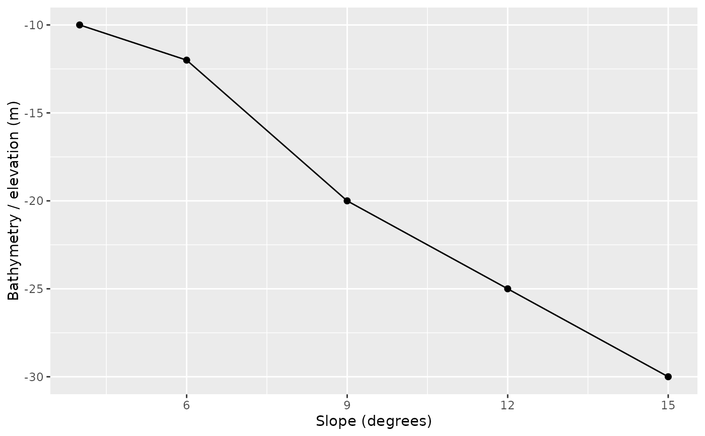

Plots a sampled raster value along a transect profile.
Usage
plot_depth_profile(
data,
distance_col = "distance",
depth_col = NULL,
value_col = NULL,
group_col = NULL,
points = TRUE,
line = TRUE,
profile_direction = c("high_to_low", "as_sampled", "low_to_high"),
positive_depth = NULL,
depth_increases_down = TRUE,
title = NULL,
subtitle = NULL,
caption = NULL
)Arguments
- data
A data frame.
- distance_col
Distance column name.
- depth_col
Depth, elevation, or metric column name. If
NULL, a raster value column is inferred while ignoring transect metadata.- value_col
Alias for
depth_col. Use this when plotting sampled variables such as slope, rugosity, BPI, or curvature.- group_col
Optional grouping column.
- points
Logical. Draw profile points.
- line
Logical. Draw profile lines when at least two finite samples are available.
- profile_direction
Direction used to orient distance before plotting.
"high_to_low"(the default) puts the shallow or higher-elevation end of each profile on the left."as_sampled"preserves the sampled line order."low_to_high"reverses the default.- positive_depth
Logical depth convention for
value_col. UseTRUEwhen larger positive values are deeper,FALSEwhen larger values are higher elevation, orNULLto infer from the value column.- depth_increases_down
Logical. If
TRUE, positive-depth profiles are plotted with a reversed y-axis so larger depths appear lower in the panel.- title, subtitle, caption
Plot text.
Details
Despite the function name, the y-axis can be any sampled raster variable: elevation, depth, slope, rugosity, BPI, curvature, or a custom metric. Metadata columns such as transect angle, offset, width, and height are ignored during automatic value-column inference.
Examples
if (requireNamespace("ggplot2", quietly = TRUE)) {
df <- data.frame(distance = 1:5, depth = -c(10, 12, 20, 25, 30))
plot_depth_profile(df, depth_col = "depth")
}
